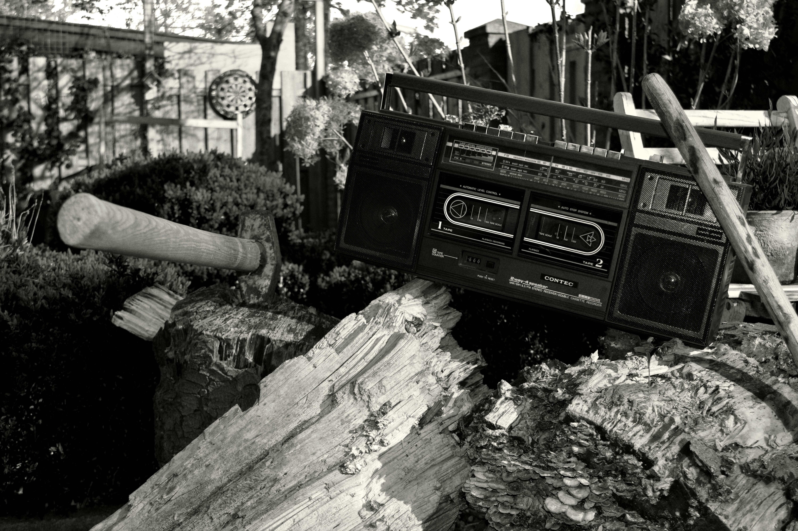

Musica de radio antigua
La radio es uno de los inventos más importantes del hombre, en cuanto fue un avance en términos de comunicación a largas distancias mediante el uso de señales electromagnéticas, siendo un avance en el campo de las telecomunicaciones, mientras, a su vez, se convirtió en un medio de entretenimiento inigualable para la sociedad de la época.
Foto radio en blanco y negro [1].